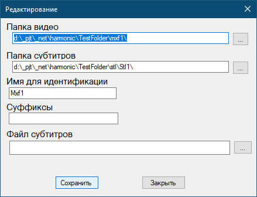

Редактирование хоста

- Папка видео - папка с файлами видео, для которых проверяется наличие субтитров
- Папка субтитров - папка субтитров
- Имя для идентификации - Имя, используемое для журналов. Должно быть уникальным.
- Суффиксы - перечисление суффиксов языков (через , или ;), для которых проверяется наличие субтитров. Если это поле пустое, то используется значение из настроек программы.
- Файл субтитров - субтитры, которые копируются вместо отсутствующих. Если это поле пустое, то используется значение из настроек программы .
Суффиксы указываются в одну строку, разделяются , или ; Пробелы учитываются!